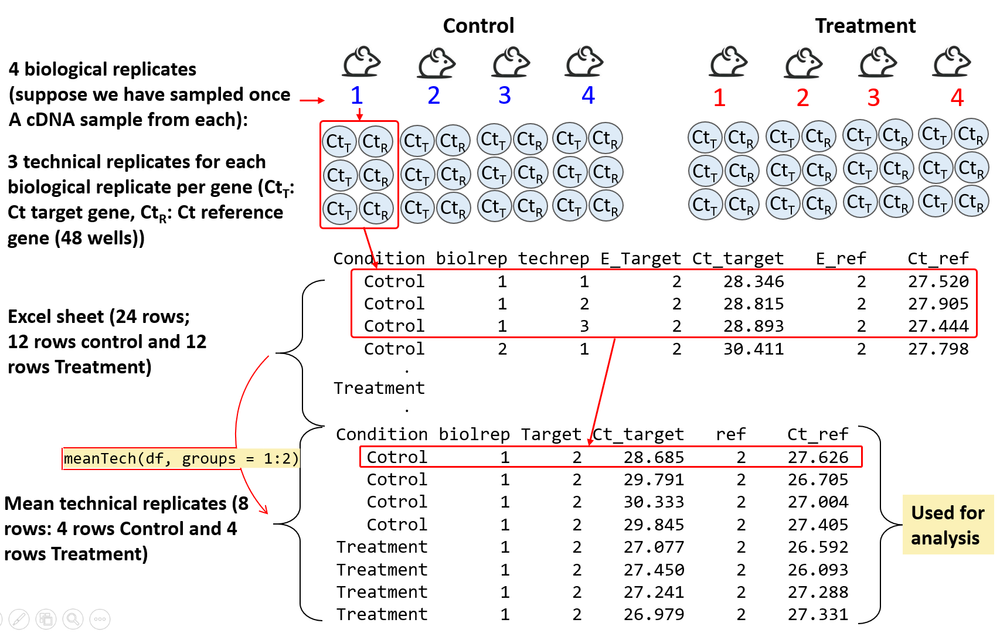
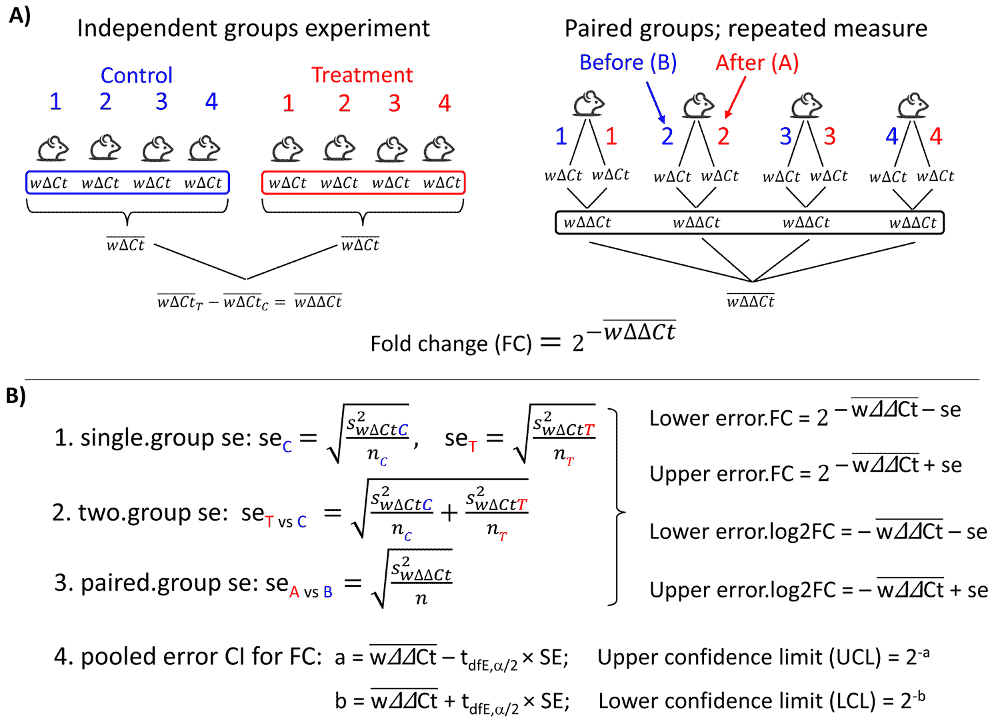
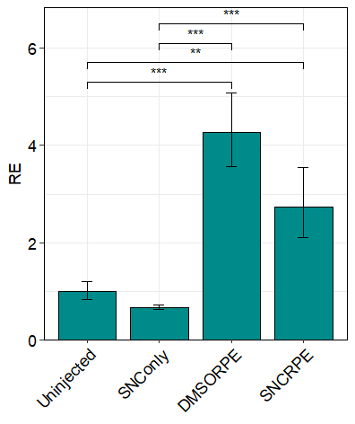

rtpcr is a tool for analysis of RT-qPCR gene expression data using and methods, including t-tests and ANOVA, repeated-measures models, and publication-ready visualizations. The package implements a general calculation method adopted from Ganger et al. (2017) and Taylor et al. (2019), covering both the Livak and Pfaffl methods.
Functions
The rtpcr package gets efficiency (E) the Ct values of genes and performs different analyses using the following functions.
| Function | Description |
|---|---|
ANOVA_DCt |
ANOVA analysis |
ANOVA_DDCt |
ANOVA analysis |
TTEST_DDCt |
method t-test analysis |
WILCOX_DDCt |
method wilcox.test analysis |
plotFactor |
Bar plot of gene expression for one-, two- or three-factor experiments |
plotSingleGene |
Creates a bar plot of relative gene expression (fold change) values from single gene analysis showing all pairwise significances. |
Means_DDCt |
Pairwise comparison of RE values for any user-specified effect |
efficiency |
Amplification efficiency statistics and standard curves |
meanTech |
Calculate mean of technical replicates |
multiplot |
Combine multiple ggplot objects into a single layout |
compute_wDCt |
Cleaning data and weighted delta Ct (wDCt) calculation |
long_to_wide |
Converts a 4-column qPCR long data format to wide format |
Quick start
Installing and loading
The rtpcr package can be installed by running the following code in R:
from CRAN:
# Installing from CRAN
install.packages("rtpcr")
# Loading the package
library(rtpcr)Or from from GitHub (developing version):
devtools::install_github("mirzaghaderi/rtpcr", build_vignettes = TRUE)Input data structure
For relative expression analysis (using TTEST_DDCt, WILCOX_DDCt, ANOVA_DCt, and ANOVA_DDCt functions), the amplification efficiency (E) and Ct or Cq values (the mean of technical replicates) is used for the input table. If the E values are not available you should use ‘2’ instead representing the complete primer amplification efficiency. The input data table should include the following columns from left to wright:
- Experimental condition columns (and one block if available NOTE 1)
- Replicates information (biological replicates or subjects; see NOTE 2, and NOTE 3)
- Target genes efficiency and Ct values (a pair column for each gene).
- Reference genes efficiency and Ct values (a pair column for each gene) NOTE 4.
The package supports one or more target or reference gene(s), supplied as efficiency–Ct column pairs. Reference gene columns must always appear last. Two sample input data sets are presented below.

If there is no blocking factor, the corresponding block columns should be omitted. However, a column for biological replicates (which may be named “Rep”, “id” or similar) is always required.

NOTE 1
When a qPCR experiment is done in multiple qPCR plates, variation resulting from the plates may interfere with the actual amount of gene expression. One solution is to conduct each plate as a randomized block so that at least one replicate of each treatment and control is present on a plate. Block effect is usually considered as random and its interaction with any main effect is not considered.
NOTE 2
For TTEST_DDCt and WILCOX_DDCt (independent samples), ANOVA_DCt, and ANOVA_DDCt each row is from a separate and unique biological replicate. For example, a data frame with 12 rows has come from an experiment with 12 individuals. The repeated measure models are intended for experiments with repeated observations (e.g. time-course data). In repeated measure experiments the Replicate column contains identifiers for each individual (id or subject). For example, all rows with a 1 at Rep column correspond to a single individual, all rows with a 2 correspond to another individual, and so on, which have been sampled at specific time points.
NOTE 3
Your data table may also include a column of technical replicates (For example, using one target and one reference genes, if you want to have 4 biological and 3 technical replicates under Control and Treatment conditions, there would be a table of 24 rows containing both biological replicates and technical replicate columns in the data). In this case, the meanTech function should be applied first to calculate the mean of the technical replicates. The resulting collapsed table is then used as the input for expression analysis. To use the meanTech function correctly, the technical replicate column must appear immediately after the biological replicate column (see Mean of technical replicates for an example).

Handling missing data
Missing Ct values for target genes is Handled using the set_missing_target_Ct_to_40 function. If TRUE, missing target gene Ct values become 40; if FALSE (default), they become NA. missing Ct values of reference genes are always converted to NA. If there are more than one reference gene, NA in the place of the E or the Ct value of cause skipping that gene and remaining references are geometrically averaged in that replicate.
Data Analysis
Amplification Efficiency
The efficiency function calculates the amplification efficiency (E), slope, and R² statistics for genes, and performs pairwise comparisons of slopes. It takes a data frame in which the first column contains the dilution ratios, followed by the Ct value columns for each gene.
# Applying the efficiency function
data <- read.csv(system.file("extdata", "data_efficiency.csv", package = "rtpcr"))
data
# dilutions Gene1 Gene2 Gene3
# 1.00 25.58 24.25 22.61
# 1.00 25.54 24.13 22.68
# 1.00 25.50 24.04 22.63
# 0.50 26.71 25.56 23.67
# 0.50 26.73 25.43 23.65
# 0.50 26.87 26.01 23.70
# 0.20 28.17 27.37 25.11
# 0.20 28.07 26.94 25.12
# 0.20 28.11 27.14 25.11
# 0.10 29.20 28.05 26.17
# 0.10 29.49 28.89 26.15
# 0.10 29.07 28.32 26.15
# 0.05 30.17 29.50 27.12
# 0.05 30.14 29.93 27.14
# 0.05 30.12 29.71 27.16
# 0.02 31.35 30.69 28.52
# 0.02 31.35 30.54 28.57
# 0.02 31.35 30.04 28.53
# 0.01 32.55 31.12 29.49
# 0.01 32.45 31.29 29.48
# 0.01 32.28 31.15 29.26
# Analysis
efficiency(data)
# $Efficiency
# Gene Slope R2 E
# 1 Gene1 -3.388094 0.9965504 1.973110
# 2 Gene2 -3.528125 0.9713914 1.920599
# 3 Gene3 -3.414551 0.9990278 1.962747
#
# $Slope_compare
# $contrasts
# contrast estimate SE df t.ratio p.value
# C2H2.26 - C2H2.01 0.1400 0.121 57 1.157 0.4837
# C2H2.26 - GAPDH 0.0265 0.121 57 0.219 0.9740
# C2H2.01 - GAPDH -0.1136 0.121 57 -0.938 0.6186
Relative expression
Single factor experiment with two levels (e.g. Control and Treatment): TTEST_DDCt() function is used for relative expression analysis in treatment condition compared to control condition. Both paired and unpaired experimental designs are supported. if the data doesn’t follow t.test assumptions, the WILCOX_DDCt() function can be used instead.
Single factor experiment with more than two levels, or multi-factor experiments: In these cases, ANOVA_DDCt() and ANOVA_DCt() functions are used for the analysis of qPCR data. By default, statistical analysis is performed based on uni- or multi-factorial Completely Randomized Design (CRD) or Randomized Complete Block Design (RCBD) design based on numOfFactors and the availability of block. However, optional custom model formula as a character string can be supplied to these functions. If provided, this overrides the default formula (uni- or multi-factorial CRD or RCBD design). The formula uses wDCt as the response variable (wDCt is automatically created by the function). For mixed models, include random effects using lmer syntax (e.g., wDCt ~ Treatment + (1 | id)). Below are a sample of most common models that can be used.
Samples models may be used in ANOVA_DCt() or ANOVA_DDCt() functions |
Experimental design |
|---|---|
| wDCt ~ Condition | Completely Randomized Design (CRD). Can also be used for t.test with two independent samples. (default) |
| wDCt ~ Factor1 * Factor2 * Factor3 | Factorial under Completely Randomized Design (RCBD) (default) |
| wDCt ~ block + Factor1 * Factor2 | Factorial under Randomized Complete Block Design (default) |
| wDCt ~ time + (1 | id) | Repeated measure analysis: different time points. Also can be used for t.test with two paired samples. |
| wDCt ~ Condition * time + (1 | id) | Repeated measure analysis: split-plot in time |
| wDCt ~ wDCt ~ Condition * time + (1 | block) + (1 | id) | Repeated measure analysis: split-plot in time |
| wDCt ~ Type + Concentration | Analysis of Covariance: Type is covariate |
| wDCt ~ block + Type + Concentration | Analysis of Covariance with blocking factor: block and Type are covariates |
NOTE
For CRD, RCBD, and factorial experiments arranged in either CRD or RCBD designs, you do not need to explicitly define a model. The package automatically selects an appropriate model based on the provided arguments. If no model is specified, the default model used is printed along with the output expression table.
NOTE
Sometime samples are independent or paired (Repeated measure experiments). Examples: 1) Analyzing gene expression in different time points, or before and after treatment in each biological replicate; 2) Analyzing gene expression between two tissue types within the same organism. For such analysis types, if there are only two time points, we can use the TTEST_DDCt with the argument paired = TRUE; or ANOVA_DDCt (if there are two or more time points) with a repeated measure model such as wDCt ~ Treatment + ( 1 | id) or wDCt ~ Treatment + ( 1 | Rep).

data <- read.csv(system.file("extdata", "data_Yuan2006PMCBioinf.csv", package = "rtpcr"))
data
# Anova analysis
ANOVA_DDCt(
data,
mainFactor.column = 1,
numOfFactors = 1,
numberOfrefGenes = 1,
block = NULL)
# An example of a properly arranged dataset from a repeated-measures experiment.
data <- read.csv(system.file("extdata", "data_repeated_measure_1.csv", package = "rtpcr"))
data
# time id E_Target Ct_target E_Ref Ct_Ref
# 1 1 2 18.92 2 32.77
# 1 2 2 15.82 2 32.45
# 1 3 2 19.84 2 31.62
# 2 1 2 19.46 2 33.03
# 2 2 2 17.56 2 33.24
# 2 3 2 19.74 2 32.08
# 3 1 2 15.73 2 32.95
# 3 2 2 17.21 2 33.64
# 3 3 2 18.09 2 33.40
# Repeated measure analysis
res <- ANOVA_DDCt(
data,
numOfFactors = 1,
numberOfrefGenes = 1,
mainFactor.column = 1,
block = NULL, model = wDCt ~ time + (1 | id))
# Paired t.test (equivalent to repeated measure analysis, but not always the same results, due to different calculation methods!)
TTEST_DDCt(
data[1:6,],
numberOfrefGenes = 1,
paired = T)
# Anova analysis
data3 <- read.csv(system.file("extdata", "data_2factorBlock3ref.csv", package = "rtpcr"))
res <- ANOVA_DDCt(
x = data3,
mainFactor.column = 2,
numOfFactors = 2,
numberOfrefGenes = 3,
block = "block",
analyseAllTarget = TRUE)Output
Data output
All the functions for relative expression analysis (including TTEST_DDCt, WILCOX_DDCt, ANOVA_DDCt(), and ANOVA_DCt()) return the relative expression table which include fold change and corresponding statistics. The output of ANOVA_DDCt(), and ANOVA_DCt() also include lm model, residuals, raw data and ANOVA table for each gene. These outputs can be obtained as follow:
| Per_gene Output | Code |
|---|---|
| expression table | res$relativeExpression |
| ANOVA table | res$perGene$gene_name$ANOVA_table |
| ANOVA lm | res$perGene$gene_name$lm |
| ANOVA lm formula | res$perGene$gene_name$lm_formula |
| Residuals | resid(res$perGene$gene_name$lm) |
# Relative expression table for the specified column in the input data:
data3 <- read.csv(system.file("extdata", "data_2factorBlock3ref.csv", package = "rtpcr"))
res <- ANOVA_DDCt(
x = data3,
mainFactor.column = 2,
numOfFactors = 2,
numberOfrefGenes = 3,
block = "block",
analyseAllTarget = TRUE)
# Relative Expression
# gene contrast ddCt RE log2FC LCL UCL se Lower.se.RE Upper.se.RE Lower.se.log2FC Upper.se.log2FC pvalue sig
# 1 PO L1 0.00000 1.00000 0.00000 0.00000 0.00000 0.13940 0.90790 1.10144 0.00000 0.00000 1.00000
# 2 PO L2 vs L1 -0.94610 1.92666 0.94610 1.25860 2.94934 0.14499 1.74245 2.13036 0.85564 1.04613 0.00116 **
# 3 PO L3 vs L1 -2.19198 4.56931 2.19198 3.08069 6.77724 0.29402 3.72685 5.60221 1.78783 2.68748 0.00000 ***
# 4 NLM L1 0.00000 1.00000 0.00000 0.00000 0.00000 0.91809 0.52921 1.88962 0.00000 0.00000 1.00000
# 5 NLM L2 vs L1 0.86568 0.54879 -0.86568 0.39830 0.75614 0.36616 0.42577 0.70734 -1.11579 -0.67163 0.00018 ***
# 6 NLM L3 vs L1 -1.44341 2.71964 1.44341 1.94670 3.79946 0.17132 2.41511 3.06256 1.28179 1.62542 0.00000 ***
#
# The L1 level was used as calibrator.
# Note: Using default model for statistical analysis: wDCt ~ block + Concentration * Type
ANOVA_table <- res$perGene$PO$ANOVA_table
ANOVA_table
lm <- res$perGene$PO$lm
lm
lm_formula <- res$perGene$gene_name$lm_formula
lm_formula
residuals <- resid(res$perGene$gene_name$lm)
residualsPlot output
A single function of plotFactor is used to produce barplots for one- to three-factor expression tables.
Plot output: example 1
data <- read.csv(system.file("extdata", "data_3factor.csv", package = "rtpcr"))
#Perform analysis first
res <- ANOVA_DCt(
data,
numOfFactors = 3,
numberOfrefGenes = 1,
block = NULL)
df <- res$relativeExpression
df
# Generate three-factor bar plot
plotFactor(
df,
x_col = "SA",
y_col = "log2FC",
group_col = "Type",
facet_col = "Conc",
Lower.se_col = "Lower.se.log2FC",
Upper.se_col = "Upper.se.log2FC",
letters_col = "sig",
letters_d = 0.3,
col_width = 0.7,
dodge_width = 0.7,
fill_colors = c("palegreen3", "skyblue"),
color = "black",
base_size = 14,
alpha = 1,
legend_position = c(0.1, 0.2))
How to edit ouptput plots?
the rtpcr plotFactor function create ggplot objects for one to three factor tables that can further be edited by adding new layers:
| Task | Example Code |
|---|---|
| Change y-axis label | p + ylab("Relative expression ($\Delta\Delta Ct$ method)") |
| Add a horizontal reference line | p + geom_hline(yintercept = 0, linetype = "dashed") |
| Change y-axis limits | p + scale_y_continuous(expand = expansion(mult = c(0, 0.1))) |
| Relabel x-axis | p + scale_x_discrete(labels = c("A" = "Control", "B" = "Treatment")) |
| Change fill colors | p + scale_fill_brewer(palette = "Set2") |
Plot output: example 2
data <- read.csv(system.file("extdata", "data_2factorBlock.csv", package = "rtpcr"))
res <- ANOVA_DCt(data,
numOfFactors = 2,
block = "block",
numberOfrefGenes = 1)
df <- res$relativeExpression
plotFactor(
data = df,
x_col = "factor2",
y_col = "RE",
group_col = "factor1",
Lower.se_col = "Lower.se.RE",
Upper.se_col = "Upper.se.RE",
letters_col = "sig",
letters_d = 0.2,
fill_colors = c("aquamarine4", "gold2"),
color = "black",
alpha = 1,
col_width = 0.7,
dodge_width = 0.7,
base_size = 16,
legend_position = c(0.8, 0.8))
Plot output: example 3
# Heffer et al., 2020, PlosOne
library(dplyr)
df <- read.csv(system.file("extdata", "data_Heffer2020PlosOne.csv", package = "rtpcr"))
res <- ANOVA_DDCt(
df,
numOfFactors = 1,
mainFactor.column = 1,
numberOfrefGenes = 1,
block = NULL)
data <- res$relativeExpression
# Selecting only the first words in 'contrast' column to be used as the x-axis labels.
data$contrast <- sub(" .*", "", data$contrast)
plotFactor(
data = data,
x_col = "contrast",
y_col = "RE",
group_col = "contrast",
facet_col = "gene",
Lower.se_col = "Lower.se.RE",
Upper.se_col = "Upper.se.RE",
letters_col = "sig",
letters_d = 0.2,
alpha = 1,
fill_colors = palette.colors(4, recycle = TRUE),
color = "black",
col_width = 0.5,
dodge_width = 0.5,
base_size = 16,
legend_position = "none")
Plot output: example 4
The function plotSingleGene() creates a bar plot of relative gene expression (fold change) values from single gene analysis showing all pairwise significances.
res <- ANOVA_DDCt(
data_Heffer2020PlosOne,
numOfFactors = 1,
mainFactor.column = 1,
numberOfrefGenes = 1,
block = NULL,
analyseAllTarget = "Tnfa")
plotSingleGene(res, fill = "cyan4", color = "black", base_size = 12)
Post-hoc analysis
Although all the expression analysis functions perform statistical comparisons for the levels of the analysed factor, further Post-hoc analysis is still possible. The Means_DDCt function performs post-hoc comparisons using a fitted model object produced by ANOVA_DCt and ANOVA_DDCt. It applies pairwise statistical comparisons of relative expression (RE) values for user-specified effects via the specs argument. Supported effects include simple effects, interactions, and slicing, provided the underlying model is an ANOVA. For ANCOVA models returned by this package, the Means_DDCt output is limited to simple effects only.
res <- ANOVA_DDCt(
data_3factor,
numOfFactors = 3,
numberOfrefGenes = 1,
mainFactor.column = 1,
block = NULL)
model <- res$perGene$E_PO$lm
# Relative expression values for Concentration main effect
Means_DDCt(model, specs = "Conc")
# contrast RE SE df LCL UCL p.value sig
# L vs H 0.1703610 0.2208988 24 0.1242014 0.2336757 <0.0001 ***
# M vs H 0.2227247 0.2208988 24 0.1623772 0.3055004 <0.0001 ***
# M vs L 1.3073692 0.2208988 24 0.9531359 1.7932535 0.0928 .
#
#Results are averaged over the levels of: Type, SA
#Confidence level used: 0.95
# Relative expression values for Concentration sliced by Type
Means_DDCt(model, specs = "Conc | Type")
# Type = R:
# contrast RE SE df LCL UCL p.value sig
# L vs H 0.103187 0.3123981 24 0.0659984 0.161331 <0.0001 ***
# M vs H 0.339151 0.3123981 24 0.2169210 0.530255 <0.0001 ***
# M vs L 3.286761 0.3123981 24 2.1022126 5.138776 <0.0001 ***
#
# Type = S:
# contrast RE SE df LCL UCL p.value sig
# L vs H 0.281265 0.3123981 24 0.1798969 0.439751 <0.0001 ***
# M vs H 0.146266 0.3123981 24 0.0935518 0.228684 <0.0001 ***
# M vs L 0.520030 0.3123981 24 0.3326112 0.813055 0.0059 **
#
# Results are averaged over the levels of: SA
# Confidence level used: 0.95
# Relative expression values for Concentration sliced by Type and SA
Means_DDCt(model, specs = "Conc | Type * SA")Checking normality of residuals
If the residuals from a t.test or an lm object are not normally distributed, the significance results might be violated. In such cases, non-parametric tests can be used. For example, the Mann–Whitney test - also known as the Wilcoxon rank-sum test, (implemented via WILCOX_DDCt() in the rtpcr package), is an alternative to t.test, and kruskal.test() is an alternative to one-way analysis of variance. These tests assess differences between population medians using independent samples. However, the t.test function (also the TTEST_DDCt function described above) includes the var.equal argument. When set to FALSE, performs t.test under the unequal variances hypothesis. Residuals from ANOVA_DCt and ANOVA_DDCt functions objects can be extracted from lmand plotted as follow:
data <- read.csv(system.file("extdata", "data_repeated_measure_1.csv", package = "rtpcr"))
res3 <- ANOVA_DDCt(
data,
numOfFactors = 1,
numberOfrefGenes = 1,
mainFactor.column = 1,
block = NULL,
model = wDCt ~ time + (1 | id)
)
residuals <- resid(res3$perGene$Target$lm)
shapiro.test(residuals)
par(mfrow = c(1,2))
plot(residuals)
qqnorm(residuals)
qqline(residuals, col = "red")Mean of technical replicates
Calculating the mean of technical replicates and generating an output table suitable for subsequent ANOVA analysis can be accomplished using the meanTech function. The input dataset must follow the column structure illustrated in the example data below. Columns used for grouping should be explicitly specified via the groups argument of the meanTech function.
# Example input data frame with technical replicates
data1 <- read.csv(system.file("extdata", "data_withTechRep.csv", package = "rtpcr"))
# Calculate mean of technical replicates using first four columns as groups
meanTech(data1,
groups = 1:2,
numOfFactors = 1,
block = NULL)
Citation
citation("rtpcr")
To cite the package ‘rtpcr’ in publications, please use:
Ghader Mirzaghaderi (2025). rtpcr: a package for statistical analysis and graphical
presentation of qPCR data in R. PeerJ 13:e20185. https://doi.org/10.7717/peerj.20185
A BibTeX entry for LaTeX users is
@Article{,
title = {rtpcr: A package for statistical analysis and graphical presentation of qPCR data in R},
author = {Ghader Mirzaghaderi},
journal = {PeerJ},
volume = {13},
pages = {e20185},
year = {2025},
doi = {10.7717/peerj.20185},
}References
Livak, Kenneth J, and Thomas D Schmittgen. 2001. Analysis of Relative Gene Expression Data Using Real-Time Quantitative PCR and the Double Delta CT Method. Methods 25 (4). doi.org/10.1006/meth.2001.1262.
Ganger, MT, Dietz GD, Ewing SJ. 2017. A common base method for analysis of qPCR data and the application of simple blocking in qPCR experiments. BMC bioinformatics 18, 1-11. doi.org/10.1186/s12859-017-1949-5.
Mirzaghaderi G. 2025. rtpcr: a package for statistical analysis and graphical presentation of qPCR data in R. PeerJ 13, e20185. doi.org/10.7717/peerj.20185.
Pfaffl MW, Horgan GW, Dempfle L. 2002. Relative expression software tool (REST©) for group-wise comparison and statistical analysis of relative expression results in real-time PCR. Nucleic acids research 30, e36-e36. doi.org/10.1093/nar/30.9.e36.
Taylor SC, Nadeau K, Abbasi M, Lachance C, Nguyen M, Fenrich, J. 2019. The ultimate qPCR experiment: producing publication quality, reproducible data the first time. Trends in Biotechnology, 37(7), 761-774. doi.org/10.1016/j.tibtech.2018.12.002.
Yuan, JS, Ann Reed, Feng Chen, and Neal Stewart. 2006. Statistical Analysis of Real-Time PCR Data. BMC Bioinformatics 7 (85). doi.org/10.1186/1471-2105-7-85.